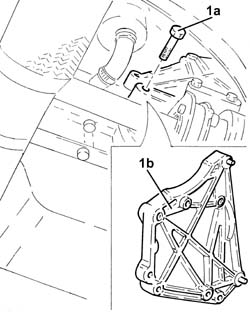
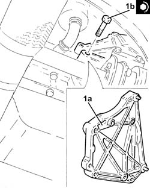

5530A40 alternator brackets/mount/spacer - r r
- Path
- Procedures > 55 ELECTRICAL EQUIPMENT > 5530 CURRENT GENERATOR > 5530A alternator and components > 5530A40 alternator brackets/mount/spacer - r r
- Kind
- repair procedure (removal / refitting; the operation number is the code)
- Applies to
- engines: 1.3 JTD 16v; all production periods
- Interactive page
- https://sloeber94.github.io/elrnDB-fPnd/en/#/2752963
Applies to: engines: 1.3 JTD 16v; all production periods
 Removing
Removing
 Refitting
RefittingRemove the car from the ramps.
Disconnect the battery negative terminal.
1092G11 Engine components single drive BELT - R.R. for versions with air conditioning
5530A14 alternator - r+r for versions with air conditioner
1. Undo the bolts (1a) and remove the alternator mounting (1b).

Applies to: engines: 1.3 JTD 16v; all production periods
Refitting
Removing1. Fit the alternator mounting (1a) in place and secure it tightening the bolts (1b) to the recommended torque.
 | Fastening | Component | Ø | Value (daNm) |
|---|---|---|---|---|
1b | Bolt | ALTERNATOR SUPPORT | M8 | (Engine crankcase side) 2.3 ÷ 2.8 |

Applies to: engines: 1.3 JTD 16v; all production periods
5530A14 alternator - r+r for versions with air conditioner
1092G11 Engine components single drive BELT - R.R. for versions with air conditioning
Connect the battery negative terminal.
Remove the vehicle from the ramp.
Topics linked from this page (3)
- 1092G11 Engine components single drive BELT - R.R. for versions with air conditioning
- 4450B04 right front wheel r r
- 5530A14 alternator - r+r for versions with air conditioner